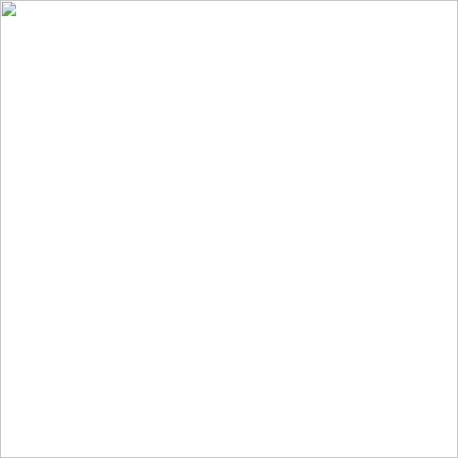

The exhibit's first room
Your virtual exhibit's first room: a small space built entirely from A-Frame's built-in shapes, called primitives. Look around with the mouse or a finger, or use the buttons to jump straight to any exhibit stop.
The room

Scene description
A small room with a pale sky, a floor and a pedestal in a woven pattern, three welcome panels in English, Spanish, and Chinese, and a sound marker that plays a calm loop only when you ask it to. Use "Look at" below to visit each stop.
Everything in this room
This list is not only a fallback: it is the same information as the room, in words, so it is always here (WCAG 1.3.1).
Adding your own video (optional)
This room ships with no video, so nothing here can arrive broken for you. When you have a short clip of your own (an object from home, a place that matters to you), see Challenge 3 for how to add it with <a-video>.